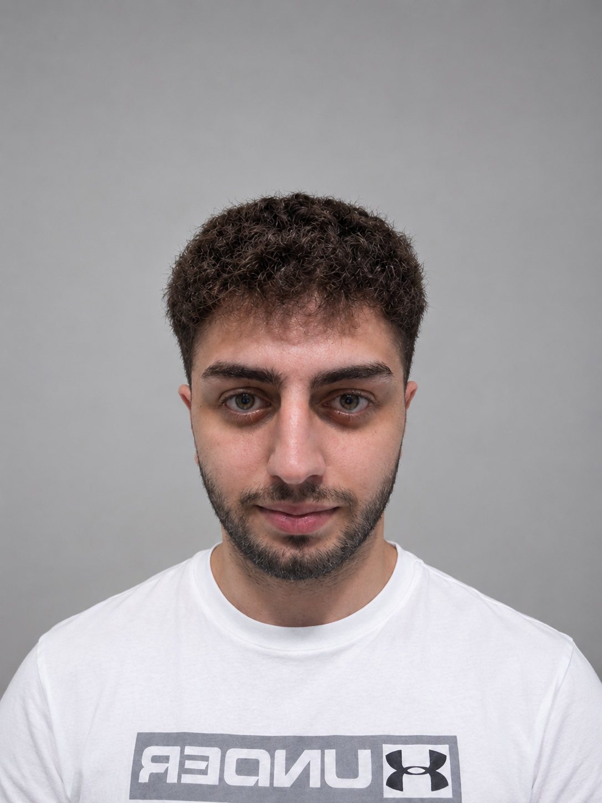

Charbel Meouchy
CCE Student & Aspiring AI Engineer
Welcome to my personal portfolio. Here you can learn more about me, my studies, my skills, and how to get in touch.
About Me
I am 21 years old. I love basketball, working out, technology, and coding. I also enjoy activities in nature, such as hiking.

A Bit More About Me
I am a hardworking and determined person who always tries to give my best in everything I do. When I start something, I like to finish it and achieve my goals. I also take my responsibilities seriously and prefer to complete my work on time rather than waiting until the deadline.
I enjoy learning new things and challenging myself to improve every day. I like working on projects that allow me to be creative and develop my skills, especially in technology and coding. I always try to stay motivated and keep improving, even when things become difficult..
My Studies
I study Computer and Communications Engineering at ESIB.
My Goals
In the future, I would like to work with AI and build a career in both companies and freelancing.
Skills
- HTML & CSS
- C++
- Python
- Problem solving
- Working with a group and solo